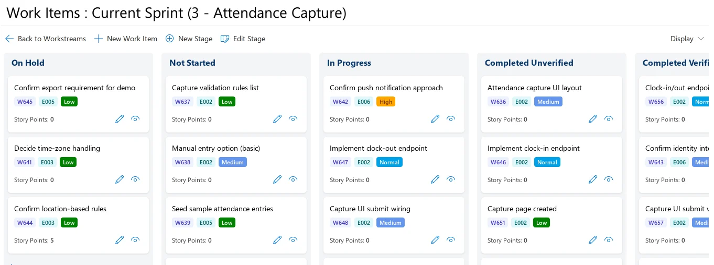
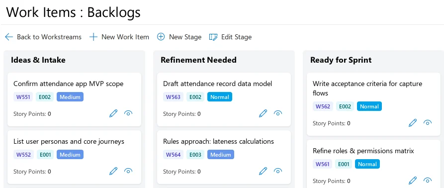
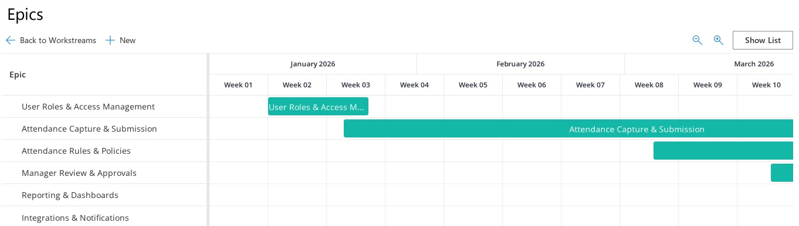

Agile Sprints
Agile Sprints is for teams that deliver software, technology projects and other work in Scrum. Stories wait in a prioritised backlog, move across a board during each sprint and go into planned releases.


Screens from the ZedX demo, which uses sample data for a college group. The demo sets up an account for you, so there’s nothing to register. Try the demo yourself
Plan from a prioritised backlog
Epics hold the bigger requirements, and user stories break them into the work that delivers them. Both sit in a prioritised product backlog.
At sprint planning, the team estimates stories in story points and takes on only what its capacity allows. Everyone sees the scope and the sprint goal before work starts.
The demo backlog has three stages of its own: Ideas & Intake, Refinement Needed and Ready for Sprint.


See how epics overlap
Each epic has an owner, a priority and delivery dates. A Gantt chart lays the epics out week by week, so the team can see how the bigger pieces of work overlap across sprints. Releases can span several sprints, and each story can be assigned to a planned release version.


Run the sprint, then review it
- Sprint board
- Each sprint has its own board, with stages you can configure. It shows what is planned, in progress, blocked or finished.
- Board views
- The side menu switches between Backlog, Current Sprint, Planned Sprints, Historic Sprints, Epics and Archived.
- Standups and reviews
- Agile Sprints supports daily standups and sprint reviews, and standup reporting is automated. Sprint progress updates in real time.
- Timeboxed sprints
- Each sprint has a velocity target to compare with the actual result. When the sprint is over, the team formally closes it.
- Metrics
- Completion, velocity and work carried over for each sprint, with trends across sprints. They are there to help teams learn and estimate better. Insights dashboards show which workstreams need a manager’s attention.
- Access
- Permissions are set by role. People can also be given access to view a workstream without changing it.
Every sprint starts from a ranked backlog and a realistic capacity, runs on its own board and closes with its velocity.
Agile Sprints works alongside Group WorkStreams
- Group WorkStreams
- Teams that also handle operational and ad hoc requests can run Group WorkStreams alongside, so that work stays out of the sprint. When work in a workstream needs sprints, the workstream can be linked to Agile Sprints without entering the data twice. About Group WorkStreams
- Signing in and hosting
- Agile Sprints runs on the ZedX Apps Platform. Staff sign in once with Microsoft Entra ID, and permissions are set by role. ZedX hosts the Professional, Group and Corporate editions. Enterprise and Enterprise Plus can run in your own Microsoft Azure subscription or other agreed infrastructure. Editions, access and hosting
Questions about Agile Sprints
Short answers to the questions teams ask first.
Is it only for software teams?
No. It’s for teams that deliver software, technology projects or other work in Scrum or another method based on sprints.
Can several teams use it on different projects?
Yes. A project can hold several workstreams, each an Agile board with its own epics, sprints and team. Each team runs its own backlog and sprints. Portfolios group related projects, so you can oversee several at once.
Does it track velocity?
Yes. Each sprint has a velocity target, and Agile Sprints records the actual velocity, the work completed and anything carried into the next sprint. Trends across sprints help the team estimate more accurately.
Does it handle releases?
Yes. A release can span one or more sprints, and each story can be assigned to a planned release version.
Does Agile Sprints include AI?
Yes. Agile Sprints includes Ask Cloe, the AI assistant built into ZedX. You can ask it questions and get guidance on Agile and Scrum work. Swiftpro says Cloe uses OpenAI technology.
Which editions include it?
Agile Sprints is currently part of the Professional and Group editions. The Home edition doesn’t include it. In Corporate, Enterprise and Enterprise Plus you can choose any ZedX app, Agile Sprints included. Compare the editions
Ask Swiftpro for an Agile Sprints demo
Use the contact form on zedxapps.com. Tell Swiftpro, the company that makes ZedX, how your teams plan and run sprints today and how many people would use Agile Sprints. They’ll get back to you.
The ZedX demo is open now with nothing to register, and Swiftpro lists a free trial that needs no credit card.